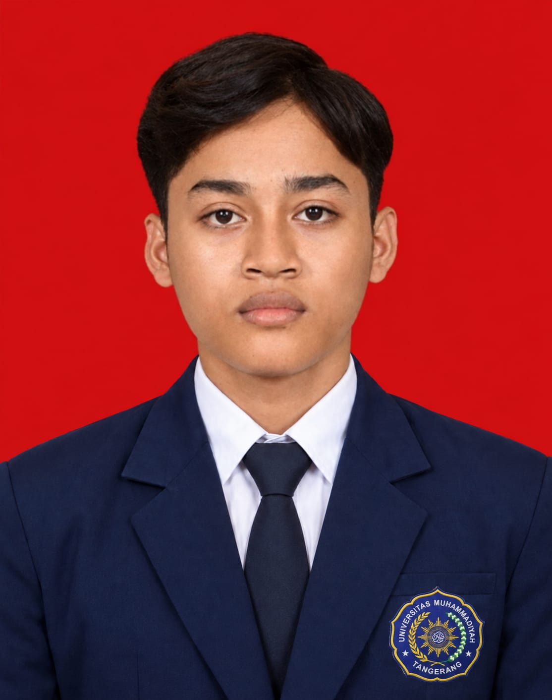

Web Development
Saya tertarik mengembangkan website yang responsif, interaktif, dan fungsional. Saya terus meningkatkan kemampuan dalam membangun website dengan mempelajari teknologi web serta mengerjakan berbagai proyek.
Web Developer
Saya adalah mahasiswa Teknik Informatika yang berfokus pada pengembangan Web Development dan UI/UX Design. Saya memiliki semangat untuk terus belajar, mengeksplorasi teknologi baru, dan menciptakan solusi digital yang fungsional, menarik, serta berorientasi pada kebutuhan pengguna.
Saat ini, saya sedang membangun pengalaman, mengembangkan keterampilan, dan mempersiapkan diri untuk tumbuh bersama industri teknologi.
Lihat proyek
APSaya merupakan mahasiswa Teknik Informatika di Universitas Muhammadiyah Tangerang yang memiliki ketertarikan besar pada bidang teknologi informasi, khususnya Web Development dan UI/UX Design.
Saat ini, saya terus mengembangkan kemampuan dan memperluas pengetahuan dalam membangun website yang fungsional, responsif, serta memiliki tampilan antarmuka yang menarik dan mudah digunakan. Saya memiliki semangat belajar yang tinggi, terbuka terhadap tantangan baru, dan berkomitmen untuk terus meningkatkan keterampilan melalui proses belajar maupun pengalaman praktik.
Melalui portofolio ini, saya ingin menunjukkan proses belajar, proyek, serta kemampuan yang sedang saya kembangkan. Tujuan saya adalah memperoleh pengalaman berharga, mengasah keterampilan di bidang IT, dan mempersiapkan diri untuk berkontribusi dalam dunia teknologi secara profesional.
KP. Sabrang, Desa Merak, Kec. Sukamulya, Kab. Tangerang (RT 003/RW 004)
Saya tertarik mengembangkan website yang responsif, interaktif, dan fungsional. Saya terus meningkatkan kemampuan dalam membangun website dengan mempelajari teknologi web serta mengerjakan berbagai proyek.
Saya memiliki minat dalam merancang antarmuka digital yang modern, menarik, dan mudah digunakan. Saya ingin menciptakan pengalaman pengguna yang intuitif dengan memperhatikan kenyamanan dan kebutuhan pengguna.
Saya berkomitmen untuk terus belajar, mengeksplorasi teknologi baru, dan mengembangkan keterampilan di bidang IT. Saya menjadikan setiap tantangan dan proyek sebagai kesempatan untuk memperoleh pengalaman serta meningkatkan kemampuan diri.
Jurusan IPS. Aktif di ekstrakurikuler Multimedia.
Belajar HTML, CSS, dan JavaScript secara mandiri, lalu membuat proyek pertama.
Universitas Muhamadiyah Tangerang. Fokus pada pemrograman web, basis data, dan desain antarmuka.
PT Contoh Digital. Membangun dan merapikan halaman situs perusahaan bersama tim.
Situs e-commerce dengan keranjang belanja dan pembayaran.
HTML · CSS · JavaScriptAplikasi catatan harian dengan pencarian dan label.
React · FirebaseHalaman promosi responsif untuk usaha kuliner lokal.
Figma · HTML · CSSPunya proyek atau ingin berdiskusi? Kirim email, saya balas secepatnya.
Chat via WhatsApp